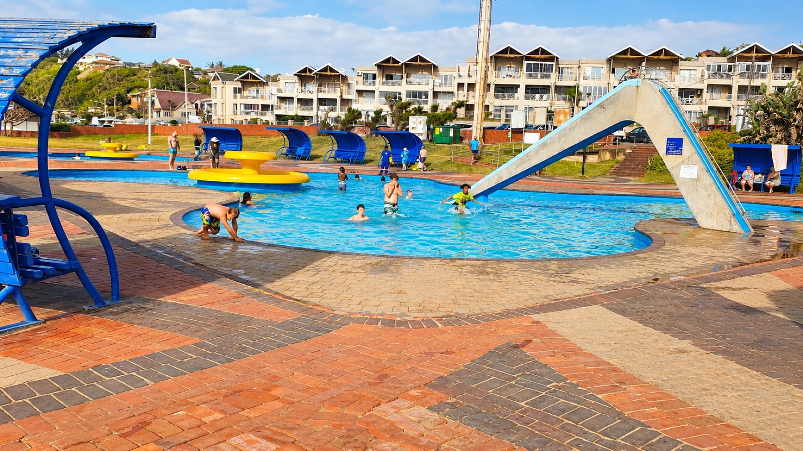

Heading out from the Bluff this Sunday? The Iqembu Cycle Challenge will affect several roads north of central Durban. A small route check before you leave can prevent a frustrating detour.

What is happening on Sunday?
The Iqembu Cycle Challenge takes place in Durban on Sunday 6 September 2026. The event starts in the morning near Moses Mabhida Stadium and uses the M4 corridor. Durban Metro Police has announced road closures and lane restrictions for the event.
The official city notice tells motorists to plan ahead, use other routes where possible and allow extra travel time. That advice matters to visitors because a navigation app may show a familiar route before temporary controls are fully reflected.
Which roads are affected?
The municipal notice lists closures or restrictions on parts of Ruth First Highway, Isaiah Ntshangase Road, Athlone Drive, Sandile Thusi Road, Masabalala Yengwa Avenue and Stalwart Simelane Street.
These roads are not on the Bluff itself. The practical issue starts if your Sunday plan takes you north through central Durban, towards the stadium precinct, Durban North or areas reached through the affected M4 section.
Our rule for a temporary road event is simple: destination first, live route second, departure time third. Decide where you are going, check the route shortly before leaving, then give yourself a buffer.
Do not guess an alternative route
A fixed detour can become wrong if traffic officers change access during an event. For that reason, this guide does not prescribe one permanent bypass.
Check the current Metro Police notice and your navigation service on the day. Follow temporary signs and traffic officers even if your phone suggests another turn. If your outing is flexible, leaving later may also be easier than trying to cross the event area during the busiest period.
If you are staying on the Bluff
Local plans on the Bluff may not need to change at all. The alert is most useful when you are driving beyond the area. Before a city outing, ask three questions: does my route use the M4 north, does it pass the stadium area, and is my arrival time fixed?
If the answer to any of those is yes, check again before departure. Our guide to getting around Durban from the Bluff can also help you decide whether to drive, use a ride service or arrange a shuttle.
Keep event-day information current
Road controls are temporary. Do not use this article as proof that a road is open or closed at a specific minute. The city notice and instructions from officers on the road take priority.
This is also why current event travel deserves its own answer. A broad Durban transport guide can explain normal choices, but it cannot replace a dated alert when a major route changes for a few hours.
FAQ: Durban road closures on 6 September
Why are Durban roads closing?
The closures and lane restrictions are for the Iqembu Cycle Challenge on Sunday 6 September 2026.
Will the Bluff itself be closed?
The official list focuses on roads around the M4 north and stadium-side area, not the Bluff. Check the latest city notice before travel because controls can change.
Should I leave extra time?
Yes. Durban Metro Police specifically advises motorists to allow extra travel time and use alternative routes where possible.
Check your plans before you leave
Winston is the owner and host of 4Shore Guesthouse and the person guests can contact directly about rooms, rates, availability and practical questions. 4Shore Guesthouse is at 28 Foreshore Drive, Ocean View, Bluff, Durban, KwaZulu-Natal, 4052. Call +27 83 254 4825 or email 4shoredurban@gmail.com.